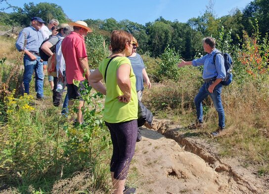
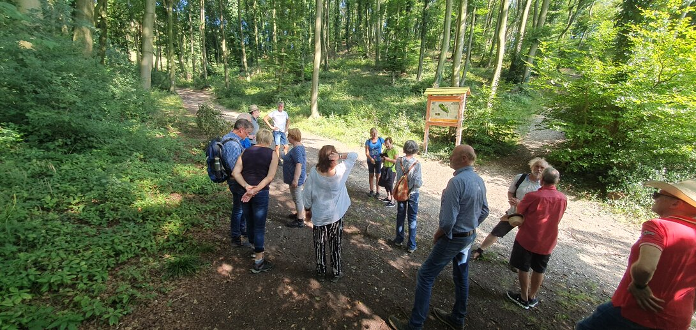

Waldspaziergang des ULS-Umweltvereins
Am letzten Sonntag traf sich eine 16-köpfige Gruppe interessierter Bürgerinnen und Bürger, auf Einladung des ULS-Umweltvereins Steinhagen, zu einem informativen Waldspaziergang.
Unter der fachkundigen Leitung von Hartmut Lüker und der Frage: Ergiebige Regenfälle – und wie geht es dem Wald? folgend, führte die Wanderung über die Hohe Liet, vorbei am Hof Schierenbeck, entlang der Emilshöhe bis zum Leberblühmchenberg.

Herr Lüker erklärte, dass ca. 40% der Niederschläge über der Landoberfläche entstehen und dabei Wäldern eine besondere Bedeutung bei der Verdunstung zukommt.
Der klimatische Kontrast zwischen Wald- und Freifläche war für
die ganze Gruppe deutlich spürbar durch den Temperatur- und Luftfeuchtigkeitsunterschied an diesem warmen Tag.
Die Teilnehmenden konnten an unterschiedlichen Wald-bereichen erkennen, dass durch die Niederschläge, besonders der Wintermonate 2023, eine vorsichtige Verjüngung im Wald stattgefunden hat. Doch wie viel Wasser der Wald in letzter Konsequenz benötigen wird, dass hängt von vielen Faktoren ab.
So ist es besonders wichtig, dass das Oberflächenwasser nicht mehr aus dem Wald abgeleitet wird, sondern langsam im Waldboden versickern kann. Nur ein intakter Wald kann bei Starkregen seine Schutzfunktion wahrnehmen.
Nicht zu verkennen sind die Auswirkungen von starken Niederschlagsereignissen, welche vom ausgetrockneten Waldboden nicht ausreichend aufgenommen werden können. Die dadurch entstehende Bodenerosion war partiell deutlich sichtbar.

Aber auch die Stellung der Bäume, Licht- oder Schattenkrone und das Vorhandensein des Unterbewuchs haben einen großen Einfluss auf eine gesunde Vegetation im Wald, erklärte Lüker.
Sabine Wienströer vom Umweltverein berichtete kurz vom Waldzustandsbericht NRW. Nur noch jeder fünfte Baum ist gesund und seit Beginn der Erhebungen war der Kronenzustand der Bäume noch nie so schlecht. So sind bei einem Drittel alle Bäume die Kronen ausgelichtet. Mit dem Blick nach oben konnte die Gruppe dem nur zustimmen.
Abschließend sagte Lüker: Wenn der Wald weiterhin für uns die Funktion als Klimaschützer und Grundwasserspeicher wahrnehmen soll, müssen sich alle, Politik und Initiativen, für einen gesunden Mischwald einsetzen.
Alle Fotos: Rebekka Klein
Text: Sabine Wienströer
